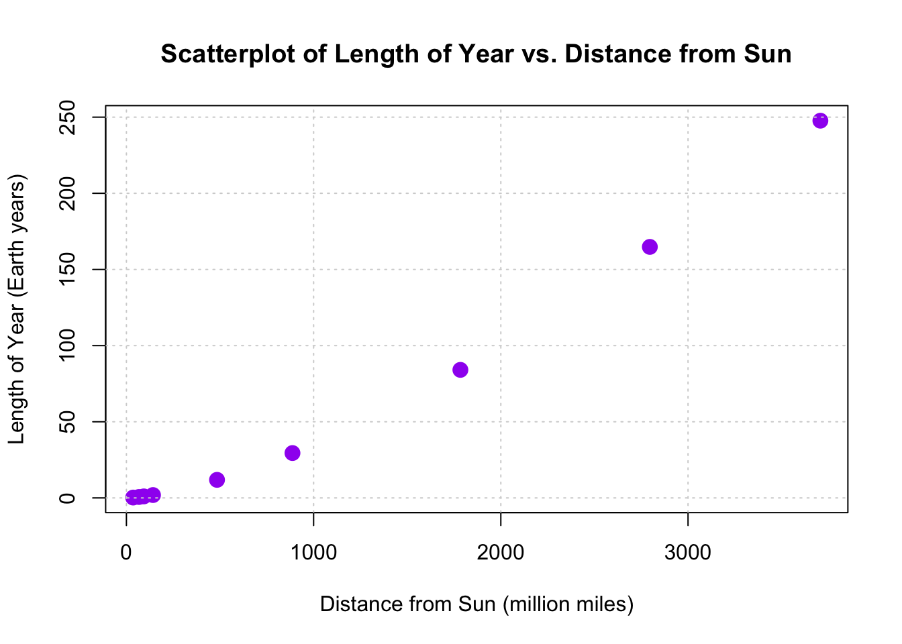

Reminder of the honor code: Lab assignments are to be completed individually!
Objective
In this lab assignment, you will explore regression analysis and inference using two datasets: reaction.txt and planets.txt. Problem 1 focuses on investigating the relationship between age and reaction time, while Problem 2 examines the relationship between the distance from the sun and the length of a year for various celestial objects.
Problem 1: Age and Reaction Time
During Week 3, you participated in an activity to test your reaction time. For this problem, you will investigate the relationship between age and reaction time. Specifically, you aim to determine if there is evidence to suggest that a person’s age can predict their reaction time.
The data for this analysis are stored in the reaction.txt dataset on Canvas. The dataset contains two variables:
age (in years)
time (average of three reaction times in milliseconds)
Part I | Assessing Conditions
1)
Copy and paste all three properly labeled plots here.
Hint
Generate three plots: a scatterplot of reaction time versus age, a residual plot to assess residuals, and a Normal Q-Q plot to evaluate the normality of residuals.
# Download and import the reaction dataurlReaction <-"https://raw.githubusercontent.com/bcervantesalvarez/MS-Statistics/main/Academic-Year-2024-2025/Fall%202024/ST-352-Labs/Lab3/reaction.txt"download.file(urlReaction, "reaction.txt")# Load the datasetreactionData <-read.table("reaction.txt", header =TRUE)# 1. Scatterplot (Base R)plot(reactionData$age, reactionData$time, main ="Scatterplot of Reaction Time vs. Age",xlab ="Age (years)", ylab ="Reaction Time (ms)", pch =19, col ="blue")

# Fit the linear regression modelmodelReaction <-lm(time ~ age, data = reactionData)# Calculate residualsreactionData$residuals <-residuals(modelReaction)# 2. Residual Plot (Base R)plot(reactionData$age, reactionData$residuals, main ="Residual Plot", xlab ="Age (years)", ylab ="Residuals (ms)", pch =19, col ="red")abline(h =0, lty =2)
# 3. Normal Q-Q Plot (Base R)qqnorm(reactionData$residuals, main ="Normal Q-Q Plot of Residuals",pch =19, col ="darkgreen")qqline(reactionData$residuals)
2)
Are there any outliers or other deviations from the pattern? Which plot(s) are you using to assess the outlier condition?
Hint
Examine the Residual Plot and the Scatterplot to identify any data points that fall far from the general trend. Look for points that are noticeably distant from the main cluster of data.
3)
Is the linearity condition satisfied? Explain. In your explanation, reference the plot(s) you are using to assess the linearity condition.
Hint
Consider the overall trend in the Scatterplot. Check if the relationship between age and reaction time appears to follow a straight line without any noticeable curves.
4)
Is the constant variation condition satisfied? Explain. In your explanation, reference the plot(s) you are using to assess the constant variation condition.
Hint
Look at the spread of residuals in the Residual Plot. Determine if the variability of residuals remains consistent across all levels of age.
5)
Is the normality condition satisfied? Explain. In your explanation, reference the plot(s) you are using to assess the normality condition.
Hint
Review the Normal Q-Q Plot of the residuals. Assess whether the points approximately follow the reference line, indicating normal distribution of residuals.
6)
Is a transformation necessary in this example? Explain.
Hint
Think about whether the assumptions of linear regression are adequately met. If all conditions (linearity, constant variation, normality) are satisfied, a transformation might not be needed.
Part II | Inference in Regression
7)
Write the least-squares regression equation. Define the terms in the equation in the context of the problem.
Hint
The regression equation relates the predicted reaction time to age. Identify the intercept and slope from the linear model.
8)
Is there evidence that a person’s age can be used to predict their reaction time?
a)
State the null and alternative hypotheses in notation and words.
Hint
Formulate the hypotheses to test whether the slope of age is significantly different from zero.
b)
From the regression output, report the appropriate test-statistic with degrees of freedom.
Hint
Identify the t-statistic and the corresponding degrees of freedom from the summary of the regression model.
c)
State a conclusion in the context of the problem. Support your conclusion with a p-value.
Hint
Based on the p-value obtained from the regression output, decide whether to reject or fail to reject the null hypothesis.
9)
Use R to predict the reaction time of a 22-year-old. Report your answer here.
# Predict reaction time for a 30-year-old [Example]newPerson <-data.frame(age =30) # -> Remember that we're looking at a 22-year-old!predictedTime <-...(..., newdata = ...)predictedTime
Hint
Use the predict() function with the fitted model and a new data frame containing the age value of 22.
10)
Obtain the appropriate 95% interval. Report and interpret the appropriate interval.
a)
A student wants to estimate the average reaction time for all 22-year-old people.
# Confidence interval for the mean reaction time at age 30 confIntervalMean <-...(..., newdata = ..., ..., ...) # -> Remember that we're looking at a 22-year-old!confIntervalMean
Hint
Use the predict() function with interval = "confidence" to obtain the confidence interval for the mean reaction time.
b)
A student wants to estimate the reaction time for a person who is 22 years old.
# Prediction interval for an individual reaction time at age 30predInterval <-...(..., newdata = ..., ...)predInterval
Hint
Use the predict() function with interval = "prediction" to obtain the prediction interval for an individual reaction time.
Appendix
Want to do it better? Use ggplot2 & tidyverse packages!
# Load tidyverse librarieslibrary(readr)library(ggplot2)library(dplyr)# Download and import the reaction dataurlReaction <-"https://raw.githubusercontent.com/bcervantesalvarez/MS-Statistics/main/Academic-Year-2024-2025/Fall%202024/ST-352-Labs/Lab3/reaction.txt"download.file(urlReaction, "reaction.txt")# Read the reaction datareactionData <-read_table("reaction.txt")# Fit the linear regression modelmodelReaction <-lm(time ~ age, data = reactionData)# Calculate residualsreactionData <- reactionData %>%mutate(residuals =resid(modelReaction))# 1. Scatterplotggplot(reactionData, aes(x = age, y = time)) +geom_point(color ="blue") +labs(title ="Scatterplot of Reaction Time vs. Age",x ="Age (years)",y ="Reaction Time (ms)") +theme_minimal()
# 3. Normal Q-Q Plot of the Residualsggplot(reactionData, aes(sample = residuals)) +stat_qq(color ="darkgreen") +stat_qq_line(color ="black") +labs(title ="Normal Q-Q Plot of Residuals") +theme_minimal()
Confidence Interval vs. Prediction Interval
library(broom)# Use the augment function to add fitted values and intervalsaugmentedData <-augment(modelReaction, newdata = reactionData, interval ="confidence", se_fit =TRUE)# Add prediction intervalsaugmentedData <- augmentedData %>%mutate(pred.lower =predict(modelReaction, newdata = reactionData, interval ="prediction")[, 2],pred.upper =predict(modelReaction, newdata = reactionData, interval ="prediction")[, 3])# 1. Plot with Confidence Intervalggplot(augmentedData, aes(x = age, y = time)) +geom_point(color ="blue") +geom_line(aes(y = .fitted), color ="black") +geom_ribbon(aes(ymin = .lower, ymax = .upper), fill ="blue", alpha =0.2) +labs(title ="Reaction Time vs. Age with Confidence Interval",x ="Age (years)", y ="Reaction Time (ms)") +theme_minimal()
# 2. Plot with Prediction Intervalggplot(augmentedData, aes(x = age, y = time)) +geom_point(color ="blue") +geom_line(aes(y = .fitted), color ="black") +geom_ribbon(aes(ymin = pred.lower, ymax = pred.upper), fill ="red", alpha =0.2) +labs(title ="Reaction Time vs. Age with Prediction Interval",x ="Age (years)", y ="Reaction Time (ms)") +theme_minimal()